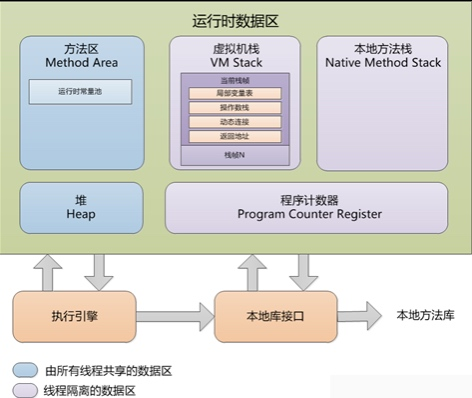
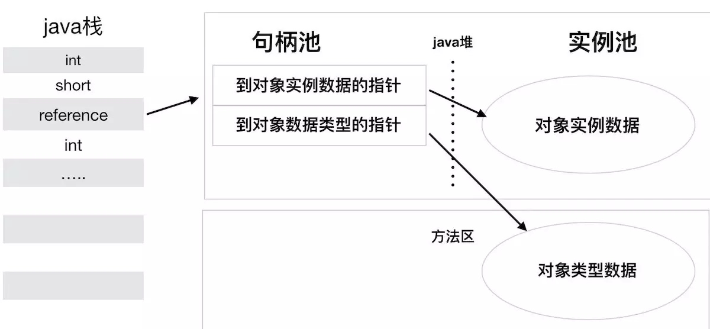
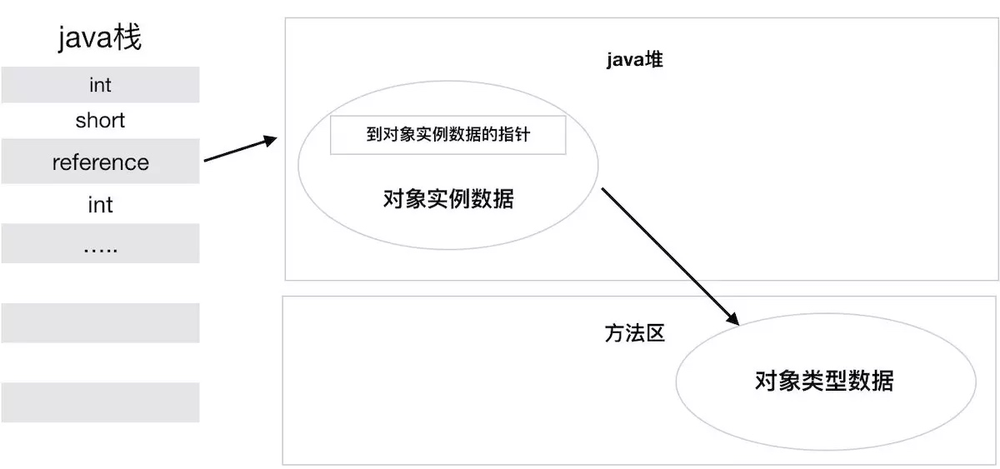

2.1 概述
本章主要介绍Java虚拟机内存的各个区域，及其作用、服务对象以及可能产生的问题。
2.2 运行时数据区域

2.2.1 程序计数器
程序计数器 （Program Counter Register）
- 线程私有，当前线程所执行的字节码的行号指示器。
- PC寄存器，保证程序能够连续地执行下去，可以确定下一条指令的地址。
2.2.2 Java虚拟机栈
Java虚拟机栈（Java Virtual Machine Stacks）
- 线程私有。
- 每个方法在执行的同时都会创建一个栈帧，栈帧存储局部变量表、操作数栈、动态链接、方法出口等信息。调用Java方法时栈帧入栈，方法执行完成栈帧出栈。
- 栈内存就是虚拟机栈。
- 局部变量表存放编译期可知的基本数据类型、引用类型和returnAddress类型。
- 栈容量超出，StackOverflowError；内存不够，OOM。
2.2.3 本地方法栈
本地方法栈（Native Method Stack）
- Java虚拟机实现可能用到C Stacks支持Native语言。
2.2.4 Java堆
Java堆（Java Heap）
- 所有线程共享的内存区域。
- 存放对象实例。
- Java堆是垃圾收集器管理的主要区域，也被称为GC堆。
- 按分代收集算法，分为新生代和老年代。
- 堆中没有内存或无法扩展时，抛出OOM。
2.2.5 方法区
方法区（Method Area）
- 各个线程共享的内存区域。
- 存储被Java虚拟机加载的类信息、常量、静态变量、即时编译期编译后的代码等数据。
2.2.6 运行时常量池
运行时常量池（Runtime Constant Pool）
- 是方法区的一部分。
- 存放编译期生成的字面量和符号引用。
2.2.7 直接内存
直接内存（Direct Memory）
- 并不是虚拟机运行时数据区的一部分，会被频繁使用，导致OOM。
- JDK 1.4引入的NIO，可以使用Native函数库直接分配堆外内存。不受Java堆大小限制，容易被忽略，导致OOM。
2.3 HotSpot虚拟机对象探秘
对象如何创建、如何布局以及如何访问。
2.3.1 对象的创建
- 检查类是否被加载、解析、初始化过。
- 为新生对象分配内存
- Java堆内存绝对规整：指针碰撞。用过的内存在一边，空闲在另一边，中间用指针作为分界点指示器。分配空间就需要把指针移动与对象大小相等的距离。
- Java堆内存不规整：虚拟机维护一个表记录内存是否可用。分配空间时从列表中查询、分配，并更新列表。
- 处理并发安全问题
- 对分配内存的动作进行同步处理，比如在虚拟机采用CAS算法并配上失败重试的方式，保证更新操作的原子性。
- 预先分配本地线程分配缓存（Thread Local Allocation Buffer，TLAB），在TLAB上分配内存。当TLAB用完并且被分配到新的TLAB时，才需要同步锁定。
- 初始化分配到的内存空间
- 除了
对象头外都初始化为零。
- 除了
- 设置对象的对象头
- 将对象的所属类、HashCode和GC分代年龄等存储在对象头中。
- 执行init方法进行初始化
- 执行init方法，初始化对象的成员变量、调用类的构造方法，这样一个对象就被创建出来了。
2.3.2 对象的内存布局
- 对象头（Header）
- Mark World：存储对象自身的运行时数据，比如HashCode、GC分代年龄、锁状态标志、线程持有的锁等。
- 元数据指针：用于指向方法区中的目标类的元数据，通过元数据可以确定对象的具体类型。
- 实例数据（Instance Data）
- 用于存储对象中的各个类型的字段信息（包括从父类继承来的）
- 对齐填充（Padding）
- 不一定存在，起到了占位符的作用。
2.3.3 对象的访问定位
- 句柄访问
- Java堆中划出内存作为句柄池，reference中存储对象的句柄地址。句柄中包含对象实例数据与类型数据各自的具体地址信息。
- 好处：对象被移动时只改变句柄中的实例数据指针，reference不需要修改。 
- 直接指针访问
- Java堆对象的布局中放置访问类型数据的相关信息，reference中存储对象地址。
- 好处：速度更快，节省指针定位的实际开销，HotSpot虚拟机中更常使用。 